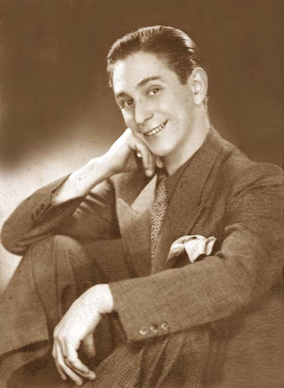

Quem foi Oscarito: o gesto das chanchadas veio do circo e do teatro de revista

Oscar Lorenzo Jacinto de la Imaculada Concepción Teresa Dias nasceu em Málaga, na Espanha, em 16 de agosto de 1906. Em 16 de agosto de 2026 ele completaria 120 anos. O Brasil o conhece por um apelido e por um rosto de cinema: Oscarito, o comediante das chanchadas da Atlântida.
Antes da primeira câmera vieram o picadeiro e o palco. Ele estreou em cena aos cinco anos, num circo, no papel de um índio. A primeira revista foi em 1932, no Rio de Janeiro. A primeira aparição em filme, em 1933.
O que o público reconhece na tela foi montado ali. A Enciclopédia Itaú Cultural descreve o estilo dele como "um gestual inspirado por acrobacias" e aponta como marca a "capacidade de explorar o cenário corporalmente". Acrobacia, trapézio e pantomima são ofício de circo.
Uma família de picadeiro e um menino no número da mãe
Os pais de Oscarito eram artistas de circo. Sobre a nacionalidade deles, as fontes divergem. A Enciclopédia Itaú Cultural escreve "pai alemão e mãe portuguesa". O Dicionário Cravo Albin dá pai alemão e mãe espanhola, e diz que os dois trabalhavam como trapezistas. A biografia da Funarte nomeia o casal, Oscar e Clotilde Teresa, e não trata de nacionalidade. As três concordam no ponto que importa aqui: era gente de circo.
A biografia de Christine Junqueira para o acervo Brasil Memória das Artes, da Funarte, conta que os pais vieram para o Rio de Janeiro contratados pelo Circo Spinelli. A pioneira da família no Brasil, diz o mesmo texto, foi a tia paterna Lili Cardona, trapezista, casada com o palhaço e acrobata Juan Cardona. Funarte e Cravo Albin registram na família uma tradição circense de 400 anos.
O menino entrou por onde entram os filhos de circo. Começou num número de acrobacia com a mãe e a irmã. Aprendeu trapézio. Fez papéis de galã e de cômico em pequenas comédias e pantomimas enquanto a família rodava os estados brasileiros. O Cravo Albin acrescenta que ele também tocou violino em circos e nas salas de espera dos cinemas mudos. É o repertório que companhias brasileiras ainda levam a palco como circo clássico, com palhaçaria, equilibrismo e humor físico.
A estreia foi de índio, ao lado do primeiro palhaço negro do país
A primeira vez em cena foi numa adaptação livre de O Guarani, de José de Alencar, montada dentro do circo. Oscarito tinha cinco anos e entrou vestido de índio. Ao lado dele estava Benjamin de Oliveira, palhaço e ator negro, que vivia o índio Peri embranquecido com alvaiade ou farinha de trigo, conforme registra a biografia da Funarte.
A cena diz o que era aquele circo. Havia enredo, personagem e texto adaptado de romance, tudo debaixo da lona. A trajetória de Benjamin virou musical em São Paulo, Benjamim, o Palhaço Negro.

O teste diante de plateia veio depois, de novo com mãe e irmã, numa peça de Carlos Cavaco encenada no Grande Circo Americano, em Santana do Livramento, no Rio Grande do Sul. Por volta de 1926 ele foi chamado para o Circo Democrata, no Rio de Janeiro. Ali fez drama, comédia, revista e farsa.
1932: o Recreio, uma revista e um presidente satirizado
Em 1932 Oscarito estreou no Teatro Recreio com a revista Calma, Gegê, de Djalma Nunes, Alfredo Breda e Amador Cisneiros. Gegê era o apelido que o povo dava a Getúlio Vargas. Ele assinou o programa como Oscarito Brenier, com o sobrenome da mãe. O convite partiu de Alfredo Breda, segundo a Enciclopédia Itaú Cultural. O Dicionário Cravo Albin acrescenta que o chamado era para imitar Vargas, e que o próprio presidente assistiu ao espetáculo.
O teatro de revista era o gênero popular dos palcos cariocas, feito de sátira política e social em quadros cômicos e musicais de teor crítico. A Enciclopédia Itaú Cultural registra que, nos anos 1920, ele procurava se modernizar pela espetacularidade diante da ascensão do cinema. A revista ainda rende homenagem em cena, como em Nas Ondas do Rádio, com 25 artistas em teatros municipais de São Paulo.
Um palco desses cobrava exatamente o que ele sabia fazer. A crítica reparou rápido: sobre a atuação em Que É Que Há?, de Alfredo Breda, a biografia da Funarte reproduz o veredito de que ele estava "muito engraçado no papel de Chuca-chuca". Vieram Prato do Dia e Frente Única, e uma proposta de Jardel Jércolis, dono da Companhia de Sainetes e Revistas Tro-lo-ló. Com ela Oscarito estreou no Teatro Carlos Gomes em Salada de Frutas, ao lado de Araci Côrtes. Em 1933 a companhia excursionou por Portugal.
O que a câmera encontrou pronto
A primeira aparição em cinema é de 1933, em A Voz do Carnaval, da Cinédia, conforme a Funarte e o Dicionário Cravo Albin. A Enciclopédia Itaú Cultural situa a entrada dele no cinema dois anos depois, em 1935, com Noites Cariocas. Nas duas versões, o corpo já vinha treinado havia mais de vinte anos.
A conta é desta reportagem, feita sobre as datas que as fontes dão. Ele nasceu em agosto de 1906 e estreou no picadeiro aos cinco anos, o que põe a estreia em 1911 ou 1912. Da estreia até a primeira revista, em 1932, vão 20 ou 21 anos. Até a primeira aparição filmada, em 1933, vão 21 ou 22.
O palco também não sumiu depois da fama. Nos anos 1950 montou a Companhia de Comédias Oscarito & Família, com a mulher, a atriz Margot Louro, a filha Myrian, o tio Afonso Stuart e Pola Leste. Levou quatro comédias de Mário Lago e José Wanderley: Cupim, em 1953; O Golpe, em 1955; Papai Fanfarrão, em 1956; Zero à Esquerda, em 1957. A última peça foi em 1966, ao lado de Dercy Gonçalves, em Cocó, my Darling…, de Marcel Mithois.
No cinema foram 46 filmes, rodados entre 1933 e 1968, número em que Funarte e Cravo Albin coincidem. Naturalizou-se brasileiro em 1949. Morreu no Rio de Janeiro em 4 de agosto de 1970.
O nome dele batiza o troféu que o Festival de Cinema de Gramado entrega todo ano a trajetórias do audiovisual brasileiro. O prêmio é de cinema. O gesto que ele homenageia foi montado antes, num picadeiro e num palco de revista, sem câmera nenhuma por perto.
Perguntas rápidas
Quando Oscarito nasceu? Em 16 de agosto de 1906, em Málaga, na Espanha. A data aparece na Enciclopédia Itaú Cultural, na biografia da Funarte e no Dicionário Cravo Albin.
Oscarito era mesmo artista de circo? Era. Estreou em cena aos cinco anos, num circo, e trabalhou como acrobata, trapezista e palhaço antes de pisar num palco de teatro de revista, em 1932.
O que era o teatro de revista? O gênero popular dos palcos do Rio de Janeiro, feito de sátira política e social em quadros cômicos e musicais. Foi nele que Oscarito estreou, com Calma, Gegê, sátira a Getúlio Vargas.